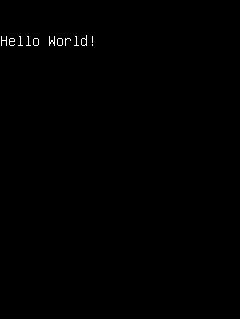

HelloWorld is a well-commented example for beginners of a very simple MoSync application that uses the Moblet framework. The application demonstrates how to structure the simplest possible application that responds to key events.

This example is included in the MoSync SDK installation in the /examples folder. For information on importing the examples into your workspace, see Importing the Examples.
When run, the words “Hello World!” should appear on an otherwise blank screen. Examine the source code of the application (in the file helloworld.cpp) to learn how the program works. We also provide detailed documentation for this example in our Hello World, Deconstructed tutorial.